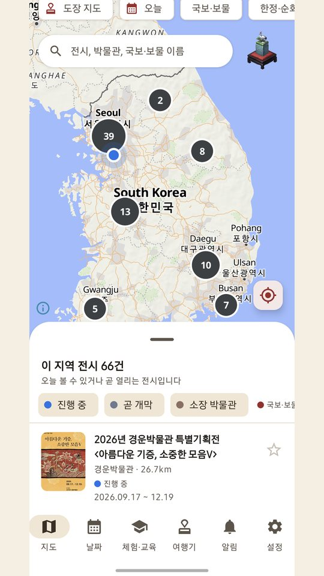

볼 만한 곳을 한 지도에서
공공 문화유산 자료로 만들고 매일 새로 고칩니다.
지도·날짜
전시와 박물관
오늘 볼 수 있는 전시, 곧 열리는 전시, 국보·보물을 소장한 박물관을 가까운 순으로 보여 줍니다.
시장
전통시장 1,385곳
5일장은 장날과 다음 장날을 알려 드리고, 오늘 장이 서는 곳은 지도에 따로 표시합니다.
문화
체험·교육·공연
서원, 향교, 고택의 전통 문화 체험과 판소리·국악·탈춤 공연을 모아 봅니다.
알림
놓치기 쉬운 전시 알림
관심 전시와 한정 공개·순회전의 개막과 마감을 알려 드립니다.
코스
지역 역사 코스
백제, 가야, 신라, 조선 유교 문화권을 잇는 관람 코스.
여행기
여행기 PDF
사진과 메모로 도장을 찍고, 블로그형·일기형·퍼즐형 PDF 로 간직하세요.
오늘의 한국
앱이 매일 받는 것과 같은 자료로 보여 드리는 오늘의 숫자입니다.
–오늘 볼 수 있는 전시
–오늘 장이 서는 5일장
–체험·교육·공연
곧 끝나는 전시
오늘 장이 서는 5일장
도장을 모아 퍼즐을 완성하세요
지역에서 도장을 찍을 때마다 서울 숭례문부터 제주 돌하르방까지, 그 지역 그림의 조각이 하나씩 맞춰집니다. 9조각을 모두 맞추면 한국 지도에 그림이 채워지고, 모은 만큼 옥새 모양 도장도 화려해집니다.
앱 화면
한국어와 영어로 쓸 수 있습니다.
